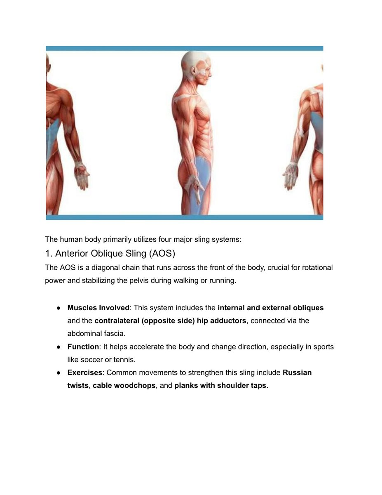
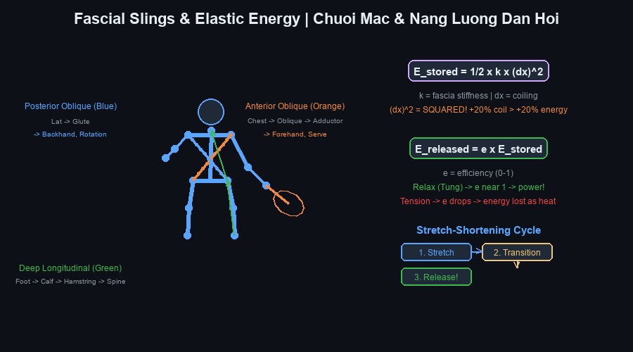
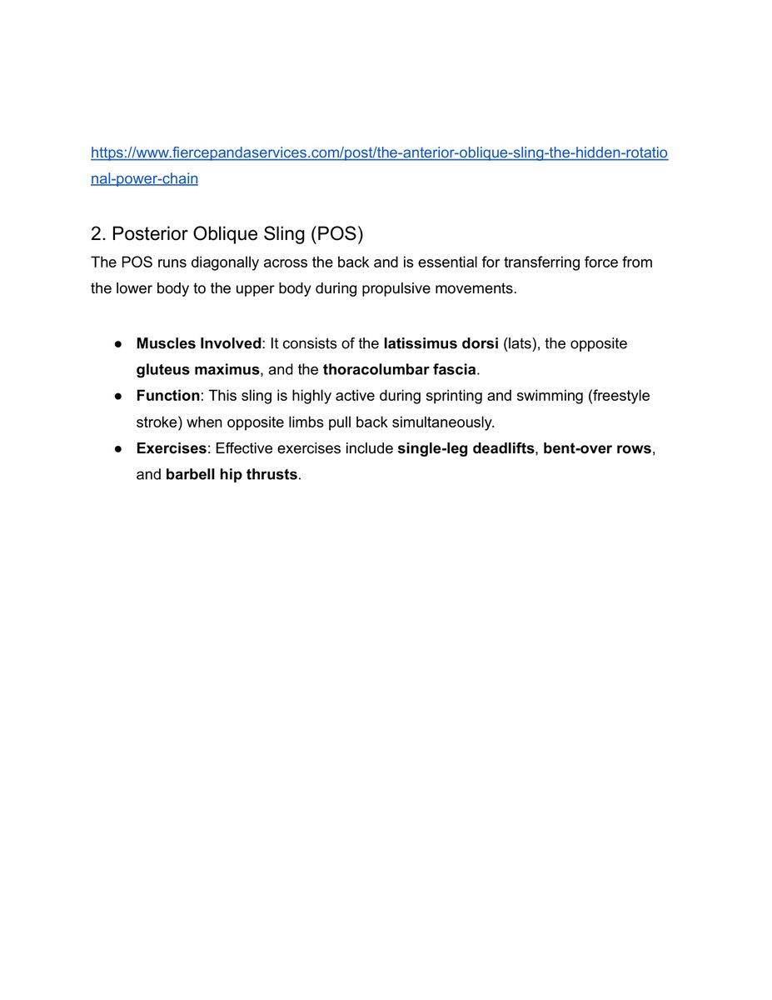
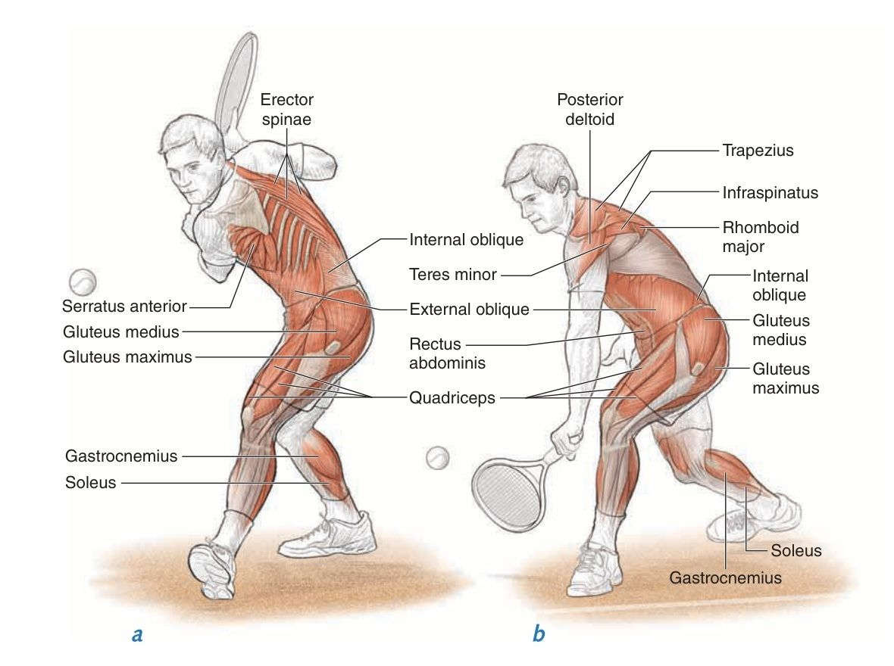
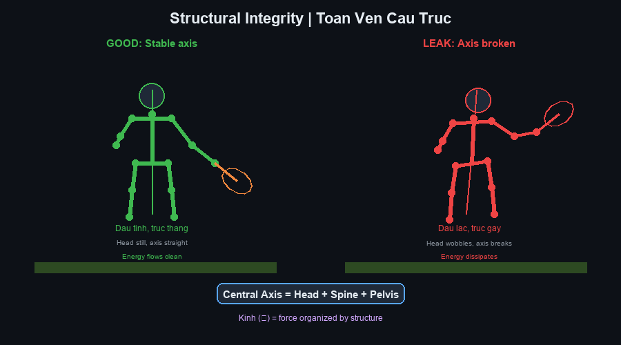

1. Khái Niệm Dây Chằng Cân Cơ (Myofascial Slings)1. The Concept of Myofascial Slings
Trong y học thể thao truyền thống, các nhóm cơ thường được phân tích tách biệt theo từng khớp chuyển động (ví dụ: bắp tay co khuỷu, cơ đùi duỗi gối). Tuy nhiên, cơ thể con người trong hoạt động thể thao tốc độ cao không bao giờ vận hành bằng các khối cơ đơn lẻ. Thay vào đó, toàn bộ hệ vận động được kết nối thông qua một mạng lưới màng cân cơ liên tục gọi là hệ thống dây chằng cân cơ (myofascial slings).In traditional sports medicine, muscle groups are usually analysed in isolation, joint by joint (the elbow flexors, the knee extensors). Yet the human body in high-speed athletic activity never operates through isolated muscle blocks. Instead, the entire movement system is connected through a continuous network of muscle and fascia known as the myofascial sling system.
Các dây chằng cân cơ đóng vai trò như những sợi dây cáp chéo đan xen quanh khung xương, vừa có chức năng neo giữ khung chậu và cột sống ở trạng thái ổn định vững chắc, vừa đóng vai trò như lò xo đàn hồi tích trữ và giải phóng động lượng cực lớn.The slings act as criss-crossing cables woven around the skeleton, both anchoring the pelvis and spine in a stable position and serving as elastic springs that store and release enormous momentum.

Hình 1: Bốn hệ thống dây chằng cân cơ chính (The Four Major Sling Systems). Sự phối hợp nhịp nhàng giữa bốn chuỗi này biến cơ thể thành một cỗ máy đòn bẩy đàn hồi liên hoàn.Figure 1: The Four Major Sling Systems. The seamless coordination between these four chains turns the body into an interlocking elastic lever machine.
Hình 2: Mô hình Chuỗi Mạc & Năng lượng Đàn hồi (Fascial Slings & Elastic Energy). Năng lượng tích trữ tỷ lệ với bình phương độ xoắn vặn thân người: E_stored = 1/2 * k * (dx)^2, giải phóng qua chu trình Co-Giãn-Rút ngắn (Stretch-Shortening Cycle).Figure 2: Fascial Slings & Elastic Energy. Stored energy scales with the square of torso rotation: E_stored = 1/2 * k * (dx)^2, released through the Stretch-Shortening Cycle.2. Bốn Hệ Thống Dây Chằng Cân Cơ Chính Của Cơ Thể2. The Four Principal Sling Systems of the Body
Cơ thể con người vận dụng bốn chuỗi dây chằng cân cơ cốt lõi để tạo ra chuyển động và duy trì thăng bằng trên sân quần vợt:The human body employs four core sling chains to produce movement and maintain balance on the tennis court:
- Chuỗi chéo trước (Anterior Oblique Sling - AOS):
Bao gồm cơ chéo bụng ngoài (external oblique), cơ chéo bụng trong đối bên (contralateral internal oblique), kết nối qua màng cân bụng (abdominal fascia) với nhóm cơ khép háng đối bên (adductors). Đây là Chuỗi động học liên hoàn quan trọng hàng đầu cho chuyển động xoay thân và gập người bùng nổ, đặc biệt là cú thuận tay (forehand) hiện đại.
Anterior Oblique Sling (AOS): comprising the external oblique, the contralateral internal oblique, connected through the abdominal fascia to the contralateral adductors. This is the single most important kinetic chain for rotational and flexing movement, especially the modern forehand. - Chuỗi chéo sau (Posterior Oblique Sling - POS):
Bao gồm cơ lưng rộng (latissimus dorsi), màng cân ngực thắt lưng (thoracolumbar fascia) và cơ mông lớn đối bên (contralateral gluteus maximus). Chuỗi này tạo ra lực đẩy xoay ngược chiều và duỗi thân, là cỗ máy sinh lực chính cho quả giao bóng (serve) và các cú đập smash.
Posterior Oblique Sling (POS): comprising the latissimus dorsi, the thoracolumbar fascia and the contralateral gluteus maximus. This chain generates counter-rotational force and trunk extension, and is the main power plant for the serve and the smash. - Chuỗi cơ bên (Lateral Sling - LS):
Bao gồm cơ mông nhỡ (gluteus medius), cơ căng mạc đùi (TFL), dải chậu chày (IT band) và cơ vuông thắt lưng đối bên (quadratus lumborum). Chuỗi này chịu trách nhiệm khóa thăng bằng cho khung chậu khi đứng trên một chân, tạo điểm tựa ổn định cho các bước chạy đổi hướng cắt góc (lateral agility).
Lateral Sling (LS): comprising the gluteus medius, tensor fasciae latae, iliotibial band and the contralateral quadratus lumborum. This chain locks pelvic balance when standing on one leg, providing a stable base for lateral agility and change-of-direction steps. - Chuỗi dọc sâu (Deep Longitudinal Sling - DLS):
Bao gồm cơ dựng sống (erector spinae), dây chằng cùng ụ ngồi (sacrotuberous ligament), cơ nhị đầu đùi (biceps femoris) và cơ chày trước/sau chạy xuống lòng bàn chân. Chuỗi này truyền tải lực phản hồi mặt đất (ground reaction force) từ bàn chân thẳng đứng lên trục cột sống.
Deep Longitudinal Sling (DLS): comprising the erector spinae, sacrotuberous ligament, biceps femoris and the anterior and posterior tibialis running down into the foot. This chain transmits ground reaction force vertically from the foot up the spinal axis.

Hình 3: Chuỗi Chéo Sau (Posterior Oblique Sling). Sự kết nối chéo giữa cơ mông lớn bên này và cơ lưng rộng bên kia qua màng cân ngực thắt lưng tạo nên bệ phóng xoay thân đầy uy lực.Figure 3: The Posterior Oblique Sling. The diagonal connection between the gluteus maximus on one side and the latissimus dorsi on the other via the thoracolumbar fascia forms a powerful rotational launch platform.
Hình 4: Giải phẫu Chuỗi Chéo Sau trong cú trái tay (One-Handed Backhand Anatomy). Pha kéo vợt về sau (a) nạp tải vào cơ mông, cơ trám và cơ dựng sống; pha vung vợt tới trước (b) giải phóng toàn bộ năng lượng qua cơ lưng rộng và vai sau.Figure 4: One-Handed Backhand Anatomy in the Posterior Oblique Sling. The backswing phase (a) loads the glutes, deep rotators and erector spinae; the forward swing (b) releases all that energy through the latissimus dorsi and rear shoulder.
Hình 5: Toàn vẹn cấu trúc và trục trung tâm (Structural Integrity & Central Axis). Trục ổn định (Đầu tĩnh, cột sống thẳng) giúp năng lượng truyền thông suốt; nếu trục bị gãy lệch, năng lượng đàn hồi của chuỗi mạc sẽ bị rò rỉ và tiêu tán dưới dạng nhiệt.Figure 5: Structural Integrity & Central Axis. A stable axis (still head, straight spine) lets energy flow through; if the axis breaks or deviates, the elastic energy of the fascial chain leaks away and dissipates as heat.Ý Nghĩa Phòng Ngừa Chấn Thương Khớp VaiThe Significance for Shoulder-Injury Prevention
Khi các Hệ thống dây chằng chéo cân mạc (AOS và POS) không được kích hoạt đúng nhịp hoặc bị yếu, vận động viên sẽ theo bản năng dùng cơ bắp cánh tay và khớp vai để cố bù đắp lực đánh. Hiện tượng này dẫn đến tình trạng quá tải cục bộ tại nhóm cơ chóp xoay (rotator cuff) và cơ nhị đầu cánh tay, gây ra hội chứng chèn ép khớp vai và rách sụn viền khớp (SLAP tear). Huấn luyện dây chằng cân cơ chính là phương pháp bảo vệ vai tự nhiên và bền vững nhất.When the oblique myofascial systems (AOS and POS) are not activated in the correct sequence or are weak, players instinctively use the arm muscles and shoulder joint to compensate for stroke force. This leads to local overload of the rotator cuff and biceps, producing shoulder impingement and SLAP tears. Sling training is the most natural and sustainable method of protecting the shoulder.